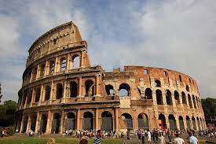
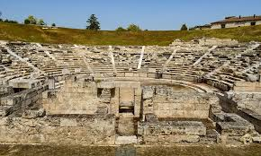
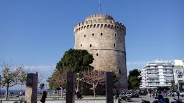
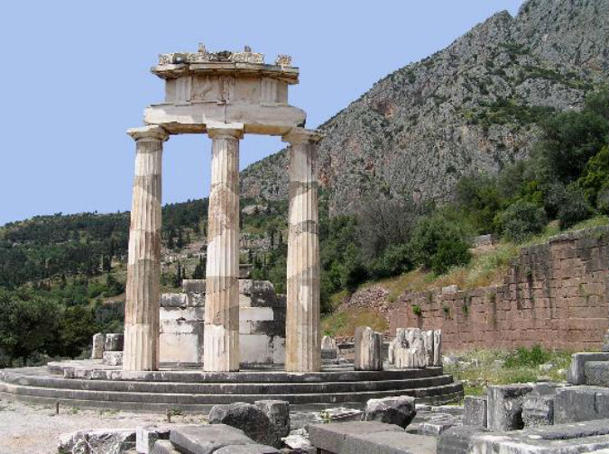
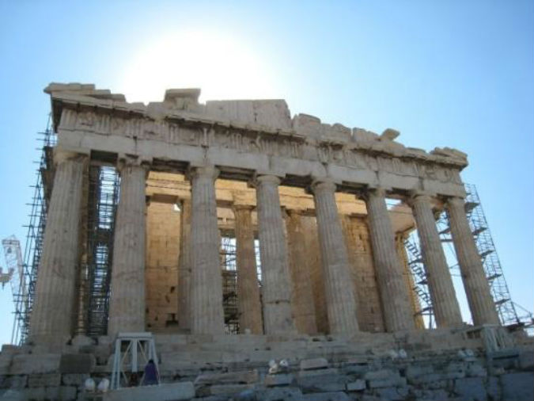
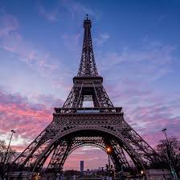

<!DOCTYPE html>
<!--
To change this license header, choose License Headers in Project Properties.
To change this template file, choose Tools | Templates
and open the template in the editor.
-->

<html>
<head>
	<title>OSMGeocoder demo page</title>
        <meta name="viewport" content="width=device-width, initial-scale=1.0">
	<meta charset="utf-8" />
	<link rel="stylesheet" href="https://unpkg.com/leaflet@1.5.1/dist/leaflet.css" />
        <link rel="shortcut icon" type="image/x-icon" href="docs/images/favicon.ico" />
	<script src="https://unpkg.com/leaflet@1.5.1/dist/leaflet.js"></script>

	<script src=" Control.OSMGeocoder.js"></script>
	<link rel="stylesheet" href="Control.OSMGeocoder.css" />
        <script src="http://ajax.googleapis.com/ajax/libs/jquery/1.9.1/jquery.js"> </script>

	
<style>
    body {
      padding: 0;
      margin: 0;
    }
    html, body, #map {
      height: 100%;
      width: 100%;
    }
  </style>
    
</head>
<body>
    
    <script> alert ("Οδηγίες: Για τη πλήρη εκμετάλλευση των δυνατοτήτων της σελίδας θα πρέπει αρχικά να χρησιμοποιείσετε επιτυχώς την επιλογή         'Locate me!'"); </script>
    <input type="button" value ="Locate me!" id="locate" style=" width:300px; height: 50px; align-content: center;">
    
    <div id="map"></div>
    <script type="text/javascript">
       
    
        document.getElementById ("locate").addEventListener ("click", handleCommand, false);
           
        var osmUrl='http://{s}.tile.openstreetmap.org/{z}/{x}/{y}.png';
        var osmAttrib='&copy; <a href="http://osm.org/copyright">OpenStreetMap</a> contributors';
        var osm = new L.TileLayer(osmUrl, {attribution: osmAttrib});
	var map = new L.Map('map').addLayer(osm).setView([10,4], 4);
        var osmGeocoder = new L.Control.OSMGeocoder({placeholder: 'Search location...'});
        map.addControl(osmGeocoder);
        var popup = L.popup();
        var myCoordinates;
        var myMarker;
        var MarkNearMe;
        var totalMarkers;
        var allMarkers = L.layerGroup();
        var myloc = L.layerGroup();
        var MarkersNearMe = L.layerGroup();
        var Sights = L.layerGroup();
        
        var overlays = 
        {
            "Όλες οι πινέζες": allMarkers,
            "Η τοποθεσία μου": myloc,
            "Πινέζες κοντά μου": MarkersNearMe,
            "Αξιοθέατα": Sights
	};
                L.control.layers(overlays, null).addTo(map);
        
                 
            
       
    function getDistance(origin, destination) 
    {
        var lon1 = toRadian(origin[1]),
        lat1 = toRadian(origin[0]),
        lon2 = toRadian(destination[1]),
        lat2 = toRadian(destination[0]);

        var deltaLat = lat2 - lat1;
        var deltaLon = lon2 - lon1;

        var a = Math.pow(Math.sin(deltaLat/2), 2) + Math.cos(lat1) * Math.cos(lat2) * Math.pow(Math.sin(deltaLon/2), 2);
        var c = 2 * Math.asin(Math.sqrt(a));
        var EARTH_RADIUS = 6371;
        return c * EARTH_RADIUS * 1000;
    }
    
    function toRadian(degree)
    {
        return degree*Math.PI/180;
    }
     
    function handleCommand() {
   
    navigator.geolocation.getCurrentPosition(function(location) 
    {
         var latlng = new L.latLng(location.coords.latitude, location.coords.longitude);
         myCoordinates = latlng;  
       
        var myIcon = L.icon({
        iconUrl: 'images/icon.png',
        iconSize: [30, 40],
        shadowSize: [68, 95],
        shadowAnchor: [22, 94]
        });
        var text = window.prompt("Πληκτρολόγησε σχόλια για τη πινέζα της τοποθεσίας σου");
        myMarker = L.marker(myCoordinates, {icon: myIcon}).bindPopup('<center> Η τοποθεσία μου </center>' +text);
        myMarker.addTo(myloc);
        myloc.addTo(map);
        myMarker.addTo(MarkersNearMe);
        myMarker.addTo(allMarkers);
        map.locate({setView: true, maxZoom: 16});
        
        });
    }
        
        var Colosseum    = L.marker([41.890209, 12.492231]).bindPopup('' + "</br>" + 'Κολοσσαίο'),
            Larissa    = L.marker([39.3812,22.253]).bindPopup('' + "</br>" + 'Αρχαίο θέατρο Λάρισας'),
            Thessaloniki = L.marker([40.640063, 22.944419]).bindPopup('' + "</br>" + 'Λευκός Πύργος'),
            Delfoi    = L.marker([ 38.47942, 22.49541]).bindPopup('' + "</br>" + 'Δελφοί'),
            Parthenon    = L.marker([37.96809, 23.72933]).bindPopup('' + "</br>" + 'Παρθενώνας');
            EiffelTower = L.marker([48.85828,2.29449]).bindPopup('' + "</br>" + 'Πύργος του Άιφελ');
            
        Sights = L.layerGroup([Colosseum, Larissa, Thessaloniki, Delfoi,Parthenon, EiffelTower]); 
        Sights.addTo(map);
      
	
    function onMapClick(e) 
    {
        popup.setLatLng(e.latlng);
        var coords = e.latlng;
        addMarker(coords);
    }
    
    map.on('click', onMapClick);
    function addMarker(coordinates)
    {
        var distance = getDistance([myCoordinates.lat,myCoordinates.lng],[coordinates.lat,coordinates.lng]);
        if (distance < 100000)
        {
            var text = window.prompt("Πληκτρολόγησε σχόλια για τη πινέζα");
            MarkNearMe = L.marker(coordinates).bindPopup('<center> Σχόλια </center>' + text).addTo(MarkersNearMe);
            MarkNearMe.addTo(allMarkers);
            MarkersNearMe.addTo(map);
                
        }
        else 
        {
            var text = window.prompt("Πληκτρολόγησε σχόλια για τη πινέζα");
            totalMarkers = L.marker(coordinates).bindPopup('<center> Σχόλια </center>' + text).addTo(allMarkers);
            allMarkers.addTo(map);       
        }
    }
       
        
	</script>
</body>
</html>
